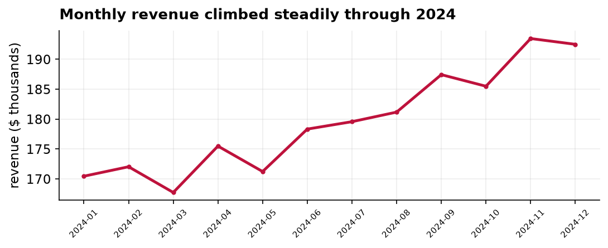
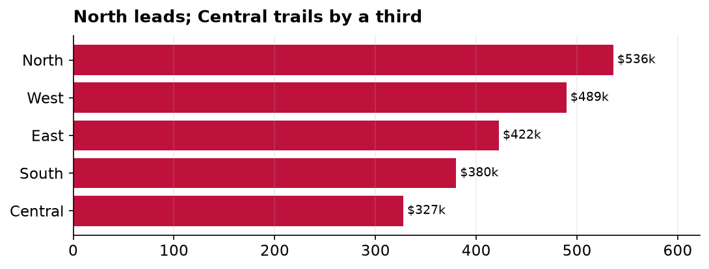

Quarterly Sales Performance, 2024
An executive summary: what the year did, where the growth came from, and what to do next.
The bottom line
We had a strong year, and the momentum is real. Revenue reached $2.15 million, and it did not arrive in a single lucky quarter: it grew in each of the four, finishing 12 percent higher than it started. The one soft spot is not our overall trajectory but our geography. Our five regions are drifting apart, and North is now a full third larger than Central. My recommendation is simple: hold the course on what is working, and move a slice of next year's early marketing budget toward the weaker regions, where there is the most room left to grow.
How the year unfolded
The chart below is the clearest picture of the year. Revenue rose more or less month over month, with a noticeable step up in the summer that held rather than faded. That distinction matters. A mid-year bump that slipped back by autumn would suggest a seasonal blip; a bump that stuck suggests genuine momentum we can plan around. Reading the shape of this line, I am comfortable calling it momentum, not noise.

In round numbers, the fourth quarter brought in about 570 thousand dollars against 510 thousand in the first, the 12 percent gain mentioned above. Across the year the business booked roughly 22,600 orders at an average of about 95 dollars each, which is a healthy and stable basket size, and gives us confidence the growth is coming from more customers rather than from quietly raising prices.
Where the growth is, and is not
Growth was broad, but it was not even. The next chart ranks the regions by the revenue they brought in. North and West together account for nearly half of the total, while Central sits at the bottom at about 327 thousand dollars, barely three fifths of North's figure. A gap between a mature region and a younger one is normal and not, by itself, a cause for alarm. What draws my attention here is the size of the gap, and the fact that Central is not obviously catching up.

The practical read is that our strongest regions are close to their ceiling, while Central and South have the longest runway. A dollar of marketing is usually worth more where the market is less saturated, so that is where I would point the next dollar.
What these numbers do, and do not, tell us
One reassurance and one caution. The reassurance: these are actual booked revenue figures, not a survey or a sample, so there is no margin of error to worry about. This is what happened, full stop. The caution: numbers like these are very good at telling us what occurred and very poor at telling us why. They show that Central lags; they cannot tell us whether that is a smaller market, weaker local marketing, or a product-fit problem. Answering the why would take a follow-up analysis, and I would recommend one before we commit a large budget shift.
Recommendation
Keep investing behind the momentum we have, and rebalance a portion of first-quarter 2025 marketing spend toward Central and South. A reasonable target is to narrow the North-to-Central revenue gap from about 39 percent today to under 25 percent by year end, and to commission a short diagnostic of why Central underperforms before scaling the spend.